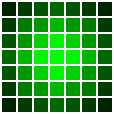
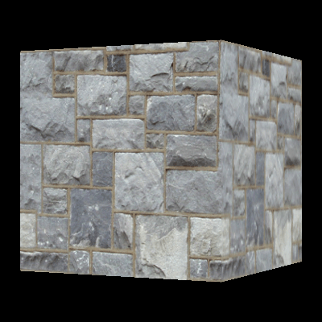
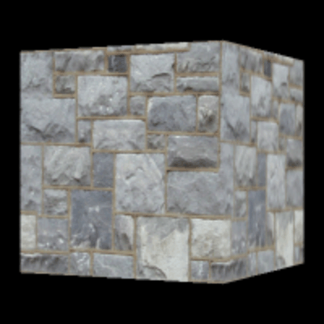
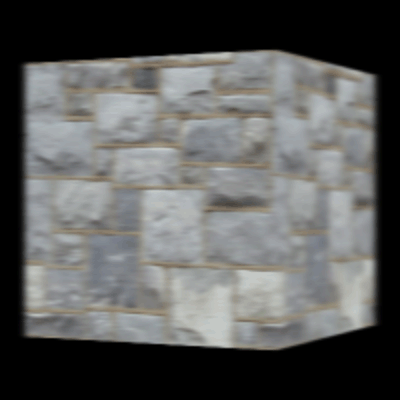
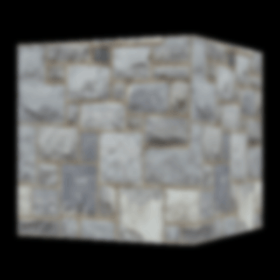
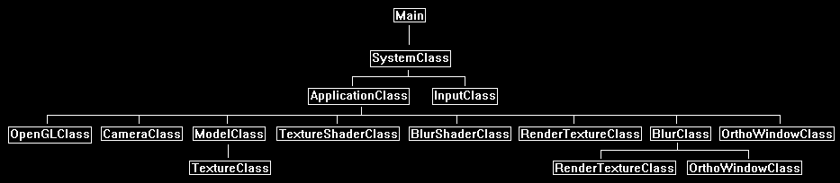

The blur effect is used for blurring the full screen scene or blurring individual objects in that scene.
But more importantly the blur effect is also the base effect for numerous other effects.
Some of those effects are bloom, depth of field blurs, full screen glow, glow mapping, halo/edge glows, softening shadow edges, blurred light trails, under water effects, and many more.
However, this tutorial will just cover how to perform a basic full screen blur.
In OpenGL 4.0 the real time blur effect is performed by first rendering the scene to a texture, performing the blur on that texture, and then rendering that texture back to the screen.
Whenever we perform 2D image operations on a scene that has been rendered to texture it is called post processing.
To perform any post processing, it is generally quite expensive and requires heavy optimization in the shaders.
Now this tutorial is not optimized, I broke it out into separate areas so that you could clearly understand how the blur effect works.
Once you understand how it works your task will be to optimize it for your own use.
There will be many ways to do so (such as using less render to textures, making the shader multi-pass, precalculating normalization of weights) but I will leave that for you to think about and implement.
The Blur Algorithm
1. Render the scene to texture.
2. Down sample the texture to half its size or less.
3. Perform a horizontal blur on the down sampled texture.
4. Perform a vertical blur.
5. Up sample the texture back to the original screen size.
6. Render that texture to the screen.
We will now discuss each of these points.
In the first step we render our entire scene to a texture.
This is fairly straight forward and has already been covered in Tutorial 25: Render to Texture, so you may want to review that if you have not already done so.
The second step is to down sample the render to texture of the scene to a smaller size.
To do this we first create a 2D square model composed of two triangles (in this tutorial I call the class that contains that 2D model OrthoWindowClass).
We make the size of that 2D square model the smaller size we require (for example 256x256, or half the screen width and half the screen height).
Next, we render the full screen texture to the smaller 2D square model and the filtering in the shader sampler will handle down sampling it for us.
You have already seen how this works in Tutorial 12: 2D Rendering.
Now you may wonder why we are down sampling and what that actually has to do with the blurring algorithm.
The first reason is that it is computationally far less expensive to perform a blur on a smaller texture than a large one (by magnitudes).
And secondly is that shrinking the texture down and then expanding it back up performs a blur on its own that makes the end result look twice as good.
In fact, back in the day that was one of the only few options you had to perform a real time blur.
You would just shrink the texture down and then blow it back up.
This was heavily pixelated and didn't look great but there weren't many other options before programmable graphics hardware showed up.
Once we have the down sampled texture, we can now perform the blur.
The method we are going to use for blurring is to take a weighted average all the neighbor pixels around each pixel to determine the value the current pixel should be.
Already you can tell this is going to be fairly expensive to perform, but we have a way of reducing the computational complexity by doing it in two linear passes instead.
We first do one horizontal pass and one then vertical instead of doing a single circular neighborhood pass.
To understand the difference in the speed between the two different pass methods take for example just a 100x100 pixel image.
Two linear passes on a 100x100 image requires reading 100 + 100 = 200 pixels.
Doing a single circular pass requires reading 100 * 100 = 10,000 pixels.
Now expand that same example to a full screen high-definition image and you see why using two linear passes is the better way to go.
The first linear pass is going to be a horizontal blur. For example, we will take a single pixel such as:
Then we will perform a weighted blur of its 3 closest horizontal neighbors to produce something similar to the following for each pixel:
We do this for the entire down sampled texture.
The resulting horizontally blurred image is then rendered to a second render to texture.
This second render to texture will be used as the input texture for the next vertical blur pass.
Now for the blur weights that were used for each pixel during the horizontal blur you can increase or decrease each one of them for each neighbor pixel.
For example, you could set the middle pixel to be 1.0, then first left and right neighbor to be 0.9, then the further two neighbors to be 0.8, and so forth.
Or you could be more aggressive with the blur and set the weights to be 1.0, 0.75, 0.5, and so on.
The weights are up to you and it can have drastically different results.
In fact, you could use a sine wave or saw tooth pattern for the weights instead, it is completely up to you and will produce different interesting blurs.
The other variable here is how many neighbors you blur.
In the example here we only blurred the first 3 neighbors.
However, we could have extended it to blur the first 20 neighbors if we wanted to.
Once again, the change to this number will have a considerable effect on the final blur result.
In the shader code for this tutorial, we use four neighbors.
Now that we have a horizontally blurred image on a separate render to texture object we can then proceed with the vertical blur.
It works exactly the same way as the horizontal blur except that it goes vertically and uses the horizontal blur render to texture as input instead of the original down sampled scene texture.
The vertical blur is also rendered to another new render to texture object.
Separating each render to texture also allows you to display the results of each blur pass on the screen for debugging purpose.
Now using the same example as before and applying the vertical blur would then produce the following blur for each pixel:

Once this process is complete, we have the final blurred low-resolution image, but we are going to now need to sample it back to the original screen size.
This is performed the exact same way that the down sample was originally performed.
We create a 2D square model composed of two triangles and make the size of the 2D square model the same size as the full resolution screen.
We then render the small blurred texture onto the full screen square model and the filtering in the shader sampler will handle the up sampling.
The process is now complete and the up sampled texture can be rendered to the screen in 2D.
Now let's take the example of our spinning cube and see how this should appear visually at each step:
First render the spinning cube to a texture:

Next down sample that texture to half the size of the original:

Perform a horizontal blur on the texture:

The perform a vertical blur on the texture and up sample it back to the normal size:

Other Considerations
Now as you may have guessed there will be some aliasing issues that arise due to the up-sampling process.
These aliasing issues may not be apparent if your original down sample was half the screen size.
However, if your original down sample was a quarter of the screen size (or less for an aggressive blur, then you will see some artifacts when it is sampled back up.
These artifacts become even more apparent with movement and specifically movement in the distance, you will see flickering/shimmering occurring.
One of the ways to deal with this problem is to write your own up sampling shader which just like the blur technique samples a large number of pixels around it to determine what value the pixel should actually have instead of just a quick linear interpolation.
As well there are other sampling filters available which can reduce the amount of aliasing that occurs.
Now if you are blurring per object instead of the entire screen then you will need to billboard the 2D texture based on the location of each object.
You can refer to the billboarding tutorial I wrote to see how to do this.
And one last thing to mention before getting into the frame work and code is that if you want an even more aggressive blur you can run the horizontal and vertical blur twice on the down sampled image instead of just once.
You can even split the multiple blurs over multiple frames.
Framework
There are three new classes for this tutorial.
The first class is the BlurShaderClass which is a shader that can blur either vertically or horizontally depending on how you call it.
The second class is the BlurClass which handles calling the blur shader to do the horizontal and vertical blurring, and it also performs the down and up scaling all in a single easy to use class.
The third new class is OrthoWindowClass which is just a 2D square model made out of two triangles used for 2D rendering only.
It allows you to size it however you want and can then be used to render textures onto it.
It can be used for down sampling, up sampling, and just plain rendering 2D to the screen.

We will start the code section with the GLSL blur shader.
Blur.vs
The blur vertex shader is the same as the texture shader vertex shader.
////////////////////////////////////////////////////////////////////////////////
// Filename: blur.vs
////////////////////////////////////////////////////////////////////////////////
#version 400
/////////////////////
// INPUT VARIABLES //
/////////////////////
in vec3 inputPosition;
in vec2 inputTexCoord;
in vec3 inputNormal;
//////////////////////
// OUTPUT VARIABLES //
//////////////////////
out vec2 texCoord;
///////////////////////
// UNIFORM VARIABLES //
///////////////////////
uniform mat4 worldMatrix;
uniform mat4 viewMatrix;
uniform mat4 projectionMatrix;
////////////////////////////////////////////////////////////////////////////////
// Vertex Shader
////////////////////////////////////////////////////////////////////////////////
void main(void)
{
// Calculate the position of the vertex against the world, view, and projection matrices.
gl_Position = vec4(inputPosition, 1.0f) * worldMatrix;
gl_Position = gl_Position * viewMatrix;
gl_Position = gl_Position * projectionMatrix;
// Store the texture coordinates for the pixel shader.
texCoord = inputTexCoord;
}
Blur.ps
////////////////////////////////////////////////////////////////////////////////
// Filename: blur.ps
////////////////////////////////////////////////////////////////////////////////
#version 400
/////////////////////
// INPUT VARIABLES //
/////////////////////
in vec2 texCoord;
//////////////////////
// OUTPUT VARIABLES //
//////////////////////
out vec4 outputColor;
We need four input uniform variables for the blur pixel shader.
We need the input texture that we are going to blur.
We will also need the screen width and screen height so we can determine the actual texel size (the actual floating-point size of each pixel on the user's monitor or output texture) so we can blur appropriately.
And we also need the blurType to know if we should blur horizontally or blur vertically for this pass.
///////////////////////
// UNIFORM VARIABLES //
///////////////////////
uniform sampler2D shaderTexture;
uniform float screenWidth;
uniform float screenHeight;
uniform float blurType;
////////////////////////////////////////////////////////////////////////////////
// Pixel Shader
////////////////////////////////////////////////////////////////////////////////
void main(void)
{
float texelSize;
vec2 texCoord1, texCoord2, texCoord3, texCoord4, texCoord5, texCoord6, texCoord7, texCoord8, texCoord9;
float weight0, weight1, weight2, weight3, weight4;
float normalization;
vec4 color;
Here we do either a horizontal blur or a vertical blur based on the blurType.
They work the same except for the direction.
// Setup a horizontal blur if the blurType is 0.0f, otherwise setup a vertical blur.
if(blurType < 0.1f)
{
Here is where we determine the texel size which is just one divided by the screen width (or render to texture width). With this value we can now determine the UV coordinates of each horizontal neighbor pixel.
// Determine the floating point size of a texel for a screen with this specific width.
texelSize = 1.0f / screenWidth;
Here is where we generate the UV coordinates for the center pixel and four neighbors on either side.
We take the current texture coordinates and add the horizontal offset to all nine coordinates.
The horizontal offset is the texel size multiplied by the distance of the neighbor.
For example, the neighbor that is 3 pixels to the left is calculated by texelSize * -3.0f.
Note the vertical coordinate in the offset is just zero so we don't move off the horizontal line we are sampling on.
// Create UV coordinates for the pixel and its four horizontal neighbors on either side.
texCoord1 = texCoord + vec2(texelSize * -4.0f, 0.0f);
texCoord2 = texCoord + vec2(texelSize * -3.0f, 0.0f);
texCoord3 = texCoord + vec2(texelSize * -2.0f, 0.0f);
texCoord4 = texCoord + vec2(texelSize * -1.0f, 0.0f);
texCoord5 = texCoord + vec2(texelSize * 0.0f, 0.0f);
texCoord6 = texCoord + vec2(texelSize * 1.0f, 0.0f);
texCoord7 = texCoord + vec2(texelSize * 2.0f, 0.0f);
texCoord8 = texCoord + vec2(texelSize * 3.0f, 0.0f);
texCoord9 = texCoord + vec2(texelSize * 4.0f, 0.0f);
}
else
{
And this is the vertical version which uses screen height instead.
// Determine the floating point size of a texel for a screen with this specific height.
texelSize = 1.0f / screenHeight;
// Create UV coordinates for the pixel and its four vertical neighbors on either side.
texCoord1 = texCoord + vec2(0.0f, texelSize * -4.0f);
texCoord2 = texCoord + vec2(0.0f, texelSize * -3.0f);
texCoord3 = texCoord + vec2(0.0f, texelSize * -2.0f);
texCoord4 = texCoord + vec2(0.0f, texelSize * -1.0f);
texCoord5 = texCoord + vec2(0.0f, texelSize * 0.0f);
texCoord6 = texCoord + vec2(0.0f, texelSize * 1.0f);
texCoord7 = texCoord + vec2(0.0f, texelSize * 2.0f);
texCoord8 = texCoord + vec2(0.0f, texelSize * 3.0f);
texCoord9 = texCoord + vec2(0.0f, texelSize * 4.0f);
}
As discussed in the algorithm we determine the color of this pixel by averaging the eight total neighbors and the center pixel.
However, the value we use for each neighbor is also modified by a weight.
The weights we use for this tutorial give the closest neighbors a greater effect on the average than the more distant neighbors.
// Create the weights that each neighbor pixel will contribute to the blur.
weight0 = 1.0f;
weight1 = 0.9f;
weight2 = 0.55f;
weight3 = 0.18f;
weight4 = 0.1f;
With the weight values set we will then normalize them to create a smoother transition in the blur.
// Create a normalized value to average the weights out a bit.
normalization = (weight0 + 2.0f * (weight1 + weight2 + weight3 + weight4));
// Normalize the weights.
weight0 = weight0 / normalization;
weight1 = weight1 / normalization;
weight2 = weight2 / normalization;
weight3 = weight3 / normalization;
weight4 = weight4 / normalization;
To create the blurred pixel, we first set the color to black and then we add the center pixel and the eight neighbors to the final color based on the weight of each.
// Initialize the color to black.
color = vec4(0.0f, 0.0f, 0.0f, 0.0f);
// Add the nine horizontal pixels to the color by the specific weight of each.
color += texture(shaderTexture, texCoord1) * weight4;
color += texture(shaderTexture, texCoord2) * weight3;
color += texture(shaderTexture, texCoord3) * weight2;
color += texture(shaderTexture, texCoord4) * weight1;
color += texture(shaderTexture, texCoord5) * weight0;
color += texture(shaderTexture, texCoord6) * weight1;
color += texture(shaderTexture, texCoord7) * weight2;
color += texture(shaderTexture, texCoord8) * weight3;
color += texture(shaderTexture, texCoord9) * weight4;
Finally, we manually set the alpha value as a blurred alpha value may cause transparency issues if that is not what we intended.
// Set the alpha channel to one as we only want to blur RGB for now.
color.a = 1.0f;
outputColor = color;
}
Blurshaderclass.h
The BlurShaderClass is just the TextureShaderClass modified to handle the blur effect.
////////////////////////////////////////////////////////////////////////////////
// Filename: blurshaderclass.h
////////////////////////////////////////////////////////////////////////////////
#ifndef _BLURSHADERCLASS_H_
#define _BLURSHADERCLASS_H_
//////////////
// INCLUDES //
//////////////
#include <iostream>
using namespace std;
///////////////////////
// MY CLASS INCLUDES //
///////////////////////
#include "openglclass.h"
////////////////////////////////////////////////////////////////////////////////
// Class name: BlurShaderClass
////////////////////////////////////////////////////////////////////////////////
class BlurShaderClass
{
public:
BlurShaderClass();
BlurShaderClass(const BlurShaderClass&);
~BlurShaderClass();
bool Initialize(OpenGLClass*);
void Shutdown();
bool SetShaderParameters(float*, float*, float*, float, float, float);
private:
bool InitializeShader(char*, char*);
void ShutdownShader();
char* LoadShaderSourceFile(char*);
void OutputShaderErrorMessage(unsigned int, char*);
void OutputLinkerErrorMessage(unsigned int);
private:
OpenGLClass* m_OpenGLPtr;
unsigned int m_vertexShader;
unsigned int m_fragmentShader;
unsigned int m_shaderProgram;
};
#endif
Blurshaderclass.cpp
////////////////////////////////////////////////////////////////////////////////
// Filename: blurshaderclass.cpp
////////////////////////////////////////////////////////////////////////////////
#include "blurshaderclass.h"
BlurShaderClass::BlurShaderClass()
{
m_OpenGLPtr = 0;
}
BlurShaderClass::BlurShaderClass(const BlurShaderClass& other)
{
}
BlurShaderClass::~BlurShaderClass()
{
}
bool BlurShaderClass::Initialize(OpenGLClass* OpenGL)
{
char vsFilename[128];
char psFilename[128];
bool result;
// Store the pointer to the OpenGL object.
m_OpenGLPtr = OpenGL;
We load the blur.vs and blur.ps GLSL shader files here.
// Set the location and names of the shader files.
strcpy(vsFilename, "../Engine/blur.vs");
strcpy(psFilename, "../Engine/blur.ps");
// Initialize the vertex and pixel shaders.
result = InitializeShader(vsFilename, psFilename);
if(!result)
{
return false;
}
return true;
}
void BlurShaderClass::Shutdown()
{
// Shutdown the shader.
ShutdownShader();
// Release the pointer to the OpenGL object.
m_OpenGLPtr = 0;
return;
}
bool BlurShaderClass::InitializeShader(char* vsFilename, char* fsFilename)
{
const char* vertexShaderBuffer;
const char* fragmentShaderBuffer;
int status;
// Load the vertex shader source file into a text buffer.
vertexShaderBuffer = LoadShaderSourceFile(vsFilename);
if(!vertexShaderBuffer)
{
return false;
}
// Load the fragment shader source file into a text buffer.
fragmentShaderBuffer = LoadShaderSourceFile(fsFilename);
if(!fragmentShaderBuffer)
{
return false;
}
// Create a vertex and fragment shader object.
m_vertexShader = m_OpenGLPtr->glCreateShader(GL_VERTEX_SHADER);
m_fragmentShader = m_OpenGLPtr->glCreateShader(GL_FRAGMENT_SHADER);
// Copy the shader source code strings into the vertex and fragment shader objects.
m_OpenGLPtr->glShaderSource(m_vertexShader, 1, &vertexShaderBuffer, NULL);
m_OpenGLPtr->glShaderSource(m_fragmentShader, 1, &fragmentShaderBuffer, NULL);
// Release the vertex and fragment shader buffers.
delete [] vertexShaderBuffer;
vertexShaderBuffer = 0;
delete [] fragmentShaderBuffer;
fragmentShaderBuffer = 0;
// Compile the shaders.
m_OpenGLPtr->glCompileShader(m_vertexShader);
m_OpenGLPtr->glCompileShader(m_fragmentShader);
// Check to see if the vertex shader compiled successfully.
m_OpenGLPtr->glGetShaderiv(m_vertexShader, GL_COMPILE_STATUS, &status);
if(status != 1)
{
// If it did not compile then write the syntax error message out to a text file for review.
OutputShaderErrorMessage(m_vertexShader, vsFilename);
return false;
}
// Check to see if the fragment shader compiled successfully.
m_OpenGLPtr->glGetShaderiv(m_fragmentShader, GL_COMPILE_STATUS, &status);
if(status != 1)
{
// If it did not compile then write the syntax error message out to a text file for review.
OutputShaderErrorMessage(m_fragmentShader, fsFilename);
return false;
}
// Create a shader program object.
m_shaderProgram = m_OpenGLPtr->glCreateProgram();
// Attach the vertex and fragment shader to the program object.
m_OpenGLPtr->glAttachShader(m_shaderProgram, m_vertexShader);
m_OpenGLPtr->glAttachShader(m_shaderProgram, m_fragmentShader);
// Bind the shader input variables.
m_OpenGLPtr->glBindAttribLocation(m_shaderProgram, 0, "inputPosition");
m_OpenGLPtr->glBindAttribLocation(m_shaderProgram, 1, "inputTexCoord");
m_OpenGLPtr->glBindAttribLocation(m_shaderProgram, 2, "inputNormal");
// Link the shader program.
m_OpenGLPtr->glLinkProgram(m_shaderProgram);
// Check the status of the link.
m_OpenGLPtr->glGetProgramiv(m_shaderProgram, GL_LINK_STATUS, &status);
if(status != 1)
{
// If it did not link then write the syntax error message out to a text file for review.
OutputLinkerErrorMessage(m_shaderProgram);
return false;
}
return true;
}
void BlurShaderClass::ShutdownShader()
{
// Detach the vertex and fragment shaders from the program.
m_OpenGLPtr->glDetachShader(m_shaderProgram, m_vertexShader);
m_OpenGLPtr->glDetachShader(m_shaderProgram, m_fragmentShader);
// Delete the vertex and fragment shaders.
m_OpenGLPtr->glDeleteShader(m_vertexShader);
m_OpenGLPtr->glDeleteShader(m_fragmentShader);
// Delete the shader program.
m_OpenGLPtr->glDeleteProgram(m_shaderProgram);
return;
}
char* BlurShaderClass::LoadShaderSourceFile(char* filename)
{
FILE* filePtr;
char* buffer;
long fileSize, count;
int error;
// Open the shader file for reading in text modee.
filePtr = fopen(filename, "r");
if(filePtr == NULL)
{
return 0;
}
// Go to the end of the file and get the size of the file.
fseek(filePtr, 0, SEEK_END);
fileSize = ftell(filePtr);
// Initialize the buffer to read the shader source file into, adding 1 for an extra null terminator.
buffer = new char[fileSize + 1];
// Return the file pointer back to the beginning of the file.
fseek(filePtr, 0, SEEK_SET);
// Read the shader text file into the buffer.
count = fread(buffer, 1, fileSize, filePtr);
if(count != fileSize)
{
return 0;
}
// Close the file.
error = fclose(filePtr);
if(error != 0)
{
return 0;
}
// Null terminate the buffer.
buffer[fileSize] = '\0';
return buffer;
}
void BlurShaderClass::OutputShaderErrorMessage(unsigned int shaderId, char* shaderFilename)
{
long count;
int logSize, error;
char* infoLog;
FILE* filePtr;
// Get the size of the string containing the information log for the failed shader compilation message.
m_OpenGLPtr->glGetShaderiv(shaderId, GL_INFO_LOG_LENGTH, &logSize);
// Increment the size by one to handle also the null terminator.
logSize++;
// Create a char buffer to hold the info log.
infoLog = new char[logSize];
// Now retrieve the info log.
m_OpenGLPtr->glGetShaderInfoLog(shaderId, logSize, NULL, infoLog);
// Open a text file to write the error message to.
filePtr = fopen("shader-error.txt", "w");
if(filePtr == NULL)
{
cout << "Error opening shader error message output file." << endl;
return;
}
// Write out the error message.
count = fwrite(infoLog, sizeof(char), logSize, filePtr);
if(count != logSize)
{
cout << "Error writing shader error message output file." << endl;
return;
}
// Close the file.
error = fclose(filePtr);
if(error != 0)
{
cout << "Error closing shader error message output file." << endl;
return;
}
// Notify the user to check the text file for compile errors.
cout << "Error compiling shader. Check shader-error.txt for error message. Shader filename: " << shaderFilename << endl;
return;
}
void BlurShaderClass::OutputLinkerErrorMessage(unsigned int programId)
{
long count;
FILE* filePtr;
int logSize, error;
char* infoLog;
// Get the size of the string containing the information log for the failed shader compilation message.
m_OpenGLPtr->glGetProgramiv(programId, GL_INFO_LOG_LENGTH, &logSize);
// Increment the size by one to handle also the null terminator.
logSize++;
// Create a char buffer to hold the info log.
infoLog = new char[logSize];
// Now retrieve the info log.
m_OpenGLPtr->glGetProgramInfoLog(programId, logSize, NULL, infoLog);
// Open a file to write the error message to.
filePtr = fopen("linker-error.txt", "w");
if(filePtr == NULL)
{
cout << "Error opening linker error message output file." << endl;
return;
}
// Write out the error message.
count = fwrite(infoLog, sizeof(char), logSize, filePtr);
if(count != logSize)
{
cout << "Error writing linker error message output file." << endl;
return;
}
// Close the file.
error = fclose(filePtr);
if(error != 0)
{
cout << "Error closing linker error message output file." << endl;
return;
}
// Pop a message up on the screen to notify the user to check the text file for linker errors.
cout << "Error linking shader program. Check linker-error.txt for message." << endl;
return;
}
bool BlurShaderClass::SetShaderParameters(float* worldMatrix, float* viewMatrix, float* projectionMatrix, float screenWidth, float screenHeight, float blurType)
{
float tpWorldMatrix[16], tpViewMatrix[16], tpProjectionMatrix[16];
int location;
Set the three regular matrices as usual.
// Transpose the matrices to prepare them for the shader.
m_OpenGLPtr->MatrixTranspose(tpWorldMatrix, worldMatrix);
m_OpenGLPtr->MatrixTranspose(tpViewMatrix, viewMatrix);
m_OpenGLPtr->MatrixTranspose(tpProjectionMatrix, projectionMatrix);
// Install the shader program as part of the current rendering state.
m_OpenGLPtr->glUseProgram(m_shaderProgram);
// Set the world matrix in the vertex shader.
location = m_OpenGLPtr->glGetUniformLocation(m_shaderProgram, "worldMatrix");
if(location == -1)
{
cout << "World matrix not set." << endl;
}
m_OpenGLPtr->glUniformMatrix4fv(location, 1, false, tpWorldMatrix);
// Set the view matrix in the vertex shader.
location = m_OpenGLPtr->glGetUniformLocation(m_shaderProgram, "viewMatrix");
if(location == -1)
{
cout << "View matrix not set." << endl;
}
m_OpenGLPtr->glUniformMatrix4fv(location, 1, false, tpViewMatrix);
// Set the projection matrix in the vertex shader.
location = m_OpenGLPtr->glGetUniformLocation(m_shaderProgram, "projectionMatrix");
if(location == -1)
{
cout << "Projection matrix not set." << endl;
}
m_OpenGLPtr->glUniformMatrix4fv(location, 1, false, tpProjectionMatrix);
Set the texture that we are going to blur.
// Set the texture in the pixel shader to use the data from the first texture unit.
location = m_OpenGLPtr->glGetUniformLocation(m_shaderProgram, "shaderTexture");
if(location == -1)
{
cout << "Shader texture not set." << endl;
}
m_OpenGLPtr->glUniform1i(location, 0);
Set the screen width and screen height.
// Set the screen width in the pixel shader.
location = m_OpenGLPtr->glGetUniformLocation(m_shaderProgram, "screenWidth");
if(location == -1)
{
cout << "Screen width not set." << endl;
}
m_OpenGLPtr->glUniform1f(location, screenWidth);
// Set the screen height in the pixel shader.
location = m_OpenGLPtr->glGetUniformLocation(m_shaderProgram, "screenHeight");
if(location == -1)
{
cout << "Screen height not set." << endl;
}
m_OpenGLPtr->glUniform1f(location, screenHeight);
Set the type of blur we want to perform (horizontal or vertical).
// Set the blur type in the pixel shader.
location = m_OpenGLPtr->glGetUniformLocation(m_shaderProgram, "blurType");
if(location == -1)
{
cout << "Blur type not set." << endl;
}
m_OpenGLPtr->glUniform1f(location, blurType);
return true;
}
Orthowindowclass.h
The OrthoWindowClass is the 3D model of a flat square window made up of two triangles that we use for 2D rendering for things such as render to texture or 2D graphics.
It uses the prefix ortho since we are projecting the 3D coordinates of the square into a two-dimensional space (the 2D screen).
This can be used to be a full screen window or a smaller window depending on the size it is initialized at.
Most of the code and structure is identical to the ModelClass that we usually use.
////////////////////////////////////////////////////////////////////////////////
// Filename: orthowindowclass.h
////////////////////////////////////////////////////////////////////////////////
#ifndef _ORTHOWINDOWCLASS_H_
#define _ORTHOWINDOWCLASS_H_
///////////////////////
// MY CLASS INCLUDES //
///////////////////////
#include "openglclass.h"
////////////////////////////////////////////////////////////////////////////////
// Class Name: OrthoWindowClass
////////////////////////////////////////////////////////////////////////////////
class OrthoWindowClass
{
private:
The vertex type only requires position and texture coordinates, no normal vectors are needed since this is for 2D only.
struct VertexType
{
float x, y, z;
float tu, tv;
};
public:
OrthoWindowClass();
OrthoWindowClass(const OrthoWindowClass&);
~OrthoWindowClass();
bool Initialize(OpenGLClass*, int, int);
void Shutdown();
void Render();
private:
bool InitializeBuffers(int, int);
void ShutdownBuffers();
void RenderBuffers();
private:
OpenGLClass* m_OpenGLPtr;
int m_vertexCount, m_indexCount;
unsigned int m_vertexArrayId, m_vertexBufferId, m_indexBufferId;
};
#endif
Orthowindowclass.cpp
////////////////////////////////////////////////////////////////////////////////
// Filename: orthowindowclass.cpp
////////////////////////////////////////////////////////////////////////////////
#include "orthowindowclass.h"
OrthoWindowClass::OrthoWindowClass()
{
m_OpenGLPtr = 0;
}
OrthoWindowClass::OrthoWindowClass(const OrthoWindowClass& other)
{
}
OrthoWindowClass::~OrthoWindowClass()
{
}
The Initialize function takes as input the width and height for creating the size of the 2D window and then calls InitializeBuffers with those parameters.
bool OrthoWindowClass::Initialize(OpenGLClass* OpenGL, int windowWidth, int windowHeight)
{
bool result;
// Store a pointer to the OpenGL object.
m_OpenGLPtr = OpenGL;
// Initialize the vertex and index buffer that hold the geometry for the ortho window model.
result = InitializeBuffers(windowWidth, windowHeight);
if(!result)
{
return false;
}
return true;
}
The Shutdown function just calls the ShutdownBuffers function to release the vertex and index buffers when we are done using this object.
void OrthoWindowClass::Shutdown()
{
// Release the vertex and index buffers.
ShutdownBuffers();
// Release the pointer to the OpenGL object.
m_OpenGLPtr = 0;
return;
}
The Render function calls the RenderBuffers function to draw the 2D window to the screen.
void OrthoWindowClass::Render()
{
// Put the vertex and index buffers on the graphics pipeline to prepare them for drawing.
RenderBuffers();
return;
}
The InitializeBuffers function is where we setup the vertex and index buffers for the 2D window using the width and height inputs.
bool OrthoWindowClass::InitializeBuffers(int windowWidth, int windowHeight)
{
VertexType* vertices;
unsigned int* indices;
float left, right, top, bottom;
int i;
As with all 2D rendering we need to figure out the left, right, top, and bottom coordinates of the 2D window using the screen dimensions and accounting for the fact that the middle of the screen is the 0,0 coordinate.
// Calculate the screen coordinates of the left side of the window.
left = (float)((windowWidth / 2) * -1);
// Calculate the screen coordinates of the right side of the window.
right = left + (float)windowWidth;
// Calculate the screen coordinates of the top of the window.
top = (float)(windowHeight / 2);
// Calculate the screen coordinates of the bottom of the window.
bottom = top - (float)windowHeight;
Next, we manually set the vertex and index count. Since the 2D window is composed of two triangles it will have six vertices and six indices.
// Set the number of vertices in the vertex array.
m_vertexCount = 6;
// Set the number of indices in the index array.
m_indexCount = m_vertexCount;
Create the temporary vertex and index arrays for storing the 2D window model data.
// Create the vertex array.
vertices = new VertexType[m_vertexCount];
// Create the index array.
indices = new unsigned int[m_indexCount];
Store the vertices and indices of the 2D window in the vertex and index array.
// First triangle.
vertices[0].x = left; // Top left.
vertices[0].y = top;
vertices[0].z = 0.0f;
vertices[0].tu = 0.0f;
vertices[0].tv = 1.0f;
vertices[1].x = right; // Bottom right.
vertices[1].y = bottom;
vertices[1].z = 0.0f;
vertices[1].tu = 1.0f;
vertices[1].tv = 0.0f;
vertices[2].x = left; // Bottom left.
vertices[2].y = bottom;
vertices[2].z = 0.0f;
vertices[2].tu = 0.0f;
vertices[2].tv = 0.0f;
// Second triangle.
vertices[3].x = left; // Top left.
vertices[3].y = top;
vertices[3].z = 0.0f;
vertices[3].tu = 0.0f;
vertices[3].tv = 1.0f;
vertices[4].x = right; // Top right.
vertices[4].y = top;
vertices[4].z = 0.0f;
vertices[4].tu = 1.0f;
vertices[4].tv = 1.0f;
vertices[5].x = right; // Bottom right.
vertices[5].y = bottom;
vertices[5].z = 0.0f;
vertices[5].tu = 1.0f;
vertices[5].tv = 0.0f;
// Load the index array with data.
for(i=0; i<m_indexCount; i++)
{
indices[i] = i;
}
Now create the vertex and index buffers using the prepared vertex and index arrays.
Note they are not created dynamic since the size will not be changing.
// Allocate an OpenGL vertex array object.
m_OpenGLPtr->glGenVertexArrays(1, &m_vertexArrayId);
// Bind the vertex array object to store all the buffers and vertex attributes we create here.
m_OpenGLPtr->glBindVertexArray(m_vertexArrayId);
// Generate an ID for the vertex buffer.
m_OpenGLPtr->glGenBuffers(1, &m_vertexBufferId);
// Bind the vertex buffer and load the vertex data into the vertex buffer. Set gpu hint to static since it will never change.
m_OpenGLPtr->glBindBuffer(GL_ARRAY_BUFFER, m_vertexBufferId);
m_OpenGLPtr->glBufferData(GL_ARRAY_BUFFER, m_vertexCount * sizeof(VertexType), vertices, GL_STATIC_DRAW);
// Enable the two vertex array attributes.
m_OpenGLPtr->glEnableVertexAttribArray(0); // Vertex position.
m_OpenGLPtr->glEnableVertexAttribArray(1); // Texture coordinates.
// Specify the location and format of the position portion of the vertex buffer.
m_OpenGLPtr->glVertexAttribPointer(0, 3, GL_FLOAT, false, sizeof(VertexType), 0);
// Specify the location and format of the texture coordinate portion of the vertex buffer.
m_OpenGLPtr->glVertexAttribPointer(1, 2, GL_FLOAT, false, sizeof(VertexType), (unsigned char*)NULL + (3 * sizeof(float)));
// Generate an ID for the index buffer.
m_OpenGLPtr->glGenBuffers(1, &m_indexBufferId);
// Bind the index buffer and load the index data into it. Leave it static since the indices won't change.
m_OpenGLPtr->glBindBuffer(GL_ELEMENT_ARRAY_BUFFER, m_indexBufferId);
m_OpenGLPtr->glBufferData(GL_ELEMENT_ARRAY_BUFFER, m_indexCount* sizeof(unsigned int), indices, GL_STATIC_DRAW);
Release the vertex and index arrays now that the vertex and index buffers have been created.
// Now that the buffers have been loaded we can release the array data.
delete [] vertices;
vertices = 0;
delete [] indices;
indices = 0;
return true;
}
The ShutdownBuffers function is used for releasing the vertex and index buffers once we done are using them.
void OrthoWindowClass::ShutdownBuffers()
{
// Release the vertex array object.
m_OpenGLPtr->glBindVertexArray(0);
m_OpenGLPtr->glDeleteVertexArrays(1, &m_vertexArrayId);
// Release the vertex buffer.
m_OpenGLPtr->glBindBuffer(GL_ARRAY_BUFFER, 0);
m_OpenGLPtr->glDeleteBuffers(1, &m_vertexBufferId);
// Release the index buffer.
m_OpenGLPtr->glBindBuffer(GL_ELEMENT_ARRAY_BUFFER, 0);
m_OpenGLPtr->glDeleteBuffers(1, &m_indexBufferId);
return;
}
RenderBuffers sets the vertex and index of this OrthoWindowClass as the data that should be rendered by the shader.
void OrthoWindowClass::RenderBuffers()
{
// Bind the vertex array object that stored all the information about the vertex and index buffers.
m_OpenGLPtr->glBindVertexArray(m_vertexArrayId);
// Render the vertex buffer using the index buffer.
glDrawElements(GL_TRIANGLES, m_indexCount, GL_UNSIGNED_INT, 0);
return;
}
Cameraclass.h
The CameraClass will need one modification for the blur tutorial.
We need a way to maintain a base view matrix for all 2D rendering work.
If we use just the regular view matrix then our 2D positioning will be off every time we move the camera.
So, we will create a new function called RenderBaseViewMatrix which will create a special 2D matrix called m_baseViewMatrix that will be used for all 2D rendering.
////////////////////////////////////////////////////////////////////////////////
// Filename: cameraclass.h
////////////////////////////////////////////////////////////////////////////////
#ifndef _CAMERACLASS_H_
#define _CAMERACLASS_H_
//////////////
// INCLUDES //
//////////////
#include <math.h>
////////////////////////////////////////////////////////////////////////////////
// Class name: CameraClass
////////////////////////////////////////////////////////////////////////////////
class CameraClass
{
private:
struct VectorType
{
float x, y, z;
};
public:
CameraClass();
CameraClass(const CameraClass&);
~CameraClass();
void SetPosition(float, float, float);
void SetRotation(float, float, float);
void GetPosition(float*);
void GetRotation(float*);
void Render();
void GetViewMatrix(float*);
void RenderBaseViewMatrix();
void GetBaseViewMatrix(float*);
void RenderReflection(float);
void GetReflectionViewMatrix(float*);
private:
void MatrixRotationYawPitchRoll(float*, float, float, float);
void TransformCoord(VectorType&, float*);
void BuildViewMatrix(float*, VectorType, VectorType, VectorType);
private:
float m_positionX, m_positionY, m_positionZ;
float m_rotationX, m_rotationY, m_rotationZ;
float m_viewMatrix[16];
float m_baseViewMatrix[16];
float m_reflectionViewMatrix[16];
};
#endif
Cameraclass.cpp
////////////////////////////////////////////////////////////////////////////////
// Filename: cameraclass.cpp
////////////////////////////////////////////////////////////////////////////////
#include "cameraclass.h"
CameraClass::CameraClass()
{
m_positionX = 0.0f;
m_positionY = 0.0f;
m_positionZ = 0.0f;
m_rotationX = 0.0f;
m_rotationY = 0.0f;
m_rotationZ = 0.0f;
}
CameraClass::CameraClass(const CameraClass& other)
{
}
CameraClass::~CameraClass()
{
}
void CameraClass::SetPosition(float x, float y, float z)
{
m_positionX = x;
m_positionY = y;
m_positionZ = z;
return;
}
void CameraClass::SetRotation(float x, float y, float z)
{
m_rotationX = x;
m_rotationY = y;
m_rotationZ = z;
return;
}
void CameraClass::GetPosition(float* position)
{
position[0] = m_positionX;
position[1] = m_positionY;
position[2] = m_positionZ;
return;
}
void CameraClass::GetRotation(float* rotation)
{
rotation[0] = m_rotationX;
rotation[1] = m_rotationY;
rotation[2] = m_rotationZ;
return;
}
void CameraClass::Render()
{
VectorType up, position, lookAt;
float yaw, pitch, roll;
float rotationMatrix[9];
// Setup the vector that points upwards.
up.x = 0.0f;
up.y = 1.0f;
up.z = 0.0f;
// Setup the position of the camera in the world.
position.x = m_positionX;
position.y = m_positionY;
position.z = m_positionZ;
// Setup where the camera is looking by default.
lookAt.x = 0.0f;
lookAt.y = 0.0f;
lookAt.z = 1.0f;
// Set the yaw (Y axis), pitch (X axis), and roll (Z axis) rotations in radians.
pitch = m_rotationX * 0.0174532925f;
yaw = m_rotationY * 0.0174532925f;
roll = m_rotationZ * 0.0174532925f;
// Create the rotation matrix from the yaw, pitch, and roll values.
MatrixRotationYawPitchRoll(rotationMatrix, yaw, pitch, roll);
// Transform the lookAt and up vector by the rotation matrix so the view is correctly rotated at the origin.
TransformCoord(lookAt, rotationMatrix);
TransformCoord(up, rotationMatrix);
// Translate the rotated camera position to the location of the viewer.
lookAt.x = position.x + lookAt.x;
lookAt.y = position.y + lookAt.y;
lookAt.z = position.z + lookAt.z;
// Finally create the view matrix from the three updated vectors.
BuildViewMatrix(m_viewMatrix, position, lookAt, up);
return;
}
void CameraClass::MatrixRotationYawPitchRoll(float* matrix, float yaw, float pitch, float roll)
{
float cYaw, cPitch, cRoll, sYaw, sPitch, sRoll;
// Get the cosine and sin of the yaw, pitch, and roll.
cYaw = cosf(yaw);
cPitch = cosf(pitch);
cRoll = cosf(roll);
sYaw = sinf(yaw);
sPitch = sinf(pitch);
sRoll = sinf(roll);
// Calculate the yaw, pitch, roll rotation matrix.
matrix[0] = (cRoll * cYaw) + (sRoll * sPitch * sYaw);
matrix[1] = (sRoll * cPitch);
matrix[2] = (cRoll * -sYaw) + (sRoll * sPitch * cYaw);
matrix[3] = (-sRoll * cYaw) + (cRoll * sPitch * sYaw);
matrix[4] = (cRoll * cPitch);
matrix[5] = (sRoll * sYaw) + (cRoll * sPitch * cYaw);
matrix[6] = (cPitch * sYaw);
matrix[7] = -sPitch;
matrix[8] = (cPitch * cYaw);
return;
}
void CameraClass::TransformCoord(VectorType& vector, float* matrix)
{
float x, y, z;
// Transform the vector by the 3x3 matrix.
x = (vector.x * matrix[0]) + (vector.y * matrix[3]) + (vector.z * matrix[6]);
y = (vector.x * matrix[1]) + (vector.y * matrix[4]) + (vector.z * matrix[7]);
z = (vector.x * matrix[2]) + (vector.y * matrix[5]) + (vector.z * matrix[8]);
// Store the result in the reference.
vector.x = x;
vector.y = y;
vector.z = z;
return;
}
void CameraClass::BuildViewMatrix(float* matrix, VectorType position, VectorType lookAt, VectorType up)
{
VectorType zAxis, xAxis, yAxis;
float length, result1, result2, result3;
// zAxis = normal(lookAt - position)
zAxis.x = lookAt.x - position.x;
zAxis.y = lookAt.y - position.y;
zAxis.z = lookAt.z - position.z;
length = sqrt((zAxis.x * zAxis.x) + (zAxis.y * zAxis.y) + (zAxis.z * zAxis.z));
zAxis.x = zAxis.x / length;
zAxis.y = zAxis.y / length;
zAxis.z = zAxis.z / length;
// xAxis = normal(cross(up, zAxis))
xAxis.x = (up.y * zAxis.z) - (up.z * zAxis.y);
xAxis.y = (up.z * zAxis.x) - (up.x * zAxis.z);
xAxis.z = (up.x * zAxis.y) - (up.y * zAxis.x);
length = sqrt((xAxis.x * xAxis.x) + (xAxis.y * xAxis.y) + (xAxis.z * xAxis.z));
xAxis.x = xAxis.x / length;
xAxis.y = xAxis.y / length;
xAxis.z = xAxis.z / length;
// yAxis = cross(zAxis, xAxis)
yAxis.x = (zAxis.y * xAxis.z) - (zAxis.z * xAxis.y);
yAxis.y = (zAxis.z * xAxis.x) - (zAxis.x * xAxis.z);
yAxis.z = (zAxis.x * xAxis.y) - (zAxis.y * xAxis.x);
// -dot(xAxis, position)
result1 = ((xAxis.x * position.x) + (xAxis.y * position.y) + (xAxis.z * position.z)) * -1.0f;
// -dot(yaxis, position)
result2 = ((yAxis.x * position.x) + (yAxis.y * position.y) + (yAxis.z * position.z)) * -1.0f;
// -dot(zaxis, position)
result3 = ((zAxis.x * position.x) + (zAxis.y * position.y) + (zAxis.z * position.z)) * -1.0f;
// Set the computed values in the view matrix.
matrix[0] = xAxis.x;
matrix[1] = yAxis.x;
matrix[2] = zAxis.x;
matrix[3] = 0.0f;
matrix[4] = xAxis.y;
matrix[5] = yAxis.y;
matrix[6] = zAxis.y;
matrix[7] = 0.0f;
matrix[8] = xAxis.z;
matrix[9] = yAxis.z;
matrix[10] = zAxis.z;
matrix[11] = 0.0f;
matrix[12] = result1;
matrix[13] = result2;
matrix[14] = result3;
matrix[15] = 1.0f;
return;
}
void CameraClass::GetViewMatrix(float* matrix)
{
matrix[0] = m_viewMatrix[0];
matrix[1] = m_viewMatrix[1];
matrix[2] = m_viewMatrix[2];
matrix[3] = m_viewMatrix[3];
matrix[4] = m_viewMatrix[4];
matrix[5] = m_viewMatrix[5];
matrix[6] = m_viewMatrix[6];
matrix[7] = m_viewMatrix[7];
matrix[8] = m_viewMatrix[8];
matrix[9] = m_viewMatrix[9];
matrix[10] = m_viewMatrix[10];
matrix[11] = m_viewMatrix[11];
matrix[12] = m_viewMatrix[12];
matrix[13] = m_viewMatrix[13];
matrix[14] = m_viewMatrix[14];
matrix[15] = m_viewMatrix[15];
return;
}
The RenderBaseViewMatrix function works just like the regular Render function.
The only difference is that we send in m_baseViewMatrix into the final BuildViewMatrix function at the end of the function instead of m_viewMatrix.
So, now we can just keep the m_baseViewMatrix as is and never change it.
This will allow us to use it as our basis for any 2D rendering work that we need to do.
void CameraClass::RenderBaseViewMatrix()
{
VectorType up, position, lookAt;
float yaw, pitch, roll;
float rotationMatrix[9];
// Setup the vector that points upwards.
up.x = 0.0f;
up.y = 1.0f;
up.z = 0.0f;
// Setup the position of the camera in the world.
position.x = m_positionX;
position.y = m_positionY;
position.z = m_positionZ;
// Setup where the camera is looking by default.
lookAt.x = 0.0f;
lookAt.y = 0.0f;
lookAt.z = 1.0f;
// Set the yaw (Y axis), pitch (X axis), and roll (Z axis) rotations in radians.
pitch = m_rotationX * 0.0174532925f;
yaw = m_rotationY * 0.0174532925f;
roll = m_rotationZ * 0.0174532925f;
// Create the rotation matrix from the yaw, pitch, and roll values.
MatrixRotationYawPitchRoll(rotationMatrix, yaw, pitch, roll);
// Transform the lookAt and up vector by the rotation matrix so the view is correctly rotated at the origin.
TransformCoord(lookAt, rotationMatrix);
TransformCoord(up, rotationMatrix);
// Translate the rotated camera position to the location of the viewer.
lookAt.x = position.x + lookAt.x;
lookAt.y = position.y + lookAt.y;
lookAt.z = position.z + lookAt.z;
// Finally create the view matrix from the three updated vectors.
BuildViewMatrix(m_baseViewMatrix, position, lookAt, up);
return;
}
We create a new function to return the base view matrix to the caller.
void CameraClass::GetBaseViewMatrix(float* matrix)
{
matrix[0] = m_baseViewMatrix[0];
matrix[1] = m_baseViewMatrix[1];
matrix[2] = m_baseViewMatrix[2];
matrix[3] = m_baseViewMatrix[3];
matrix[4] = m_baseViewMatrix[4];
matrix[5] = m_baseViewMatrix[5];
matrix[6] = m_baseViewMatrix[6];
matrix[7] = m_baseViewMatrix[7];
matrix[8] = m_baseViewMatrix[8];
matrix[9] = m_baseViewMatrix[9];
matrix[10] = m_baseViewMatrix[10];
matrix[11] = m_baseViewMatrix[11];
matrix[12] = m_baseViewMatrix[12];
matrix[13] = m_baseViewMatrix[13];
matrix[14] = m_baseViewMatrix[14];
matrix[15] = m_baseViewMatrix[15];
return;
}
void CameraClass::RenderReflection(float height)
{
VectorType up, position, lookAt;
float yaw, pitch, roll;
float rotationMatrix[9];
// Setup the vector that points upwards.
up.x = 0.0f;
up.y = 1.0f;
up.z = 0.0f;
// Setup the position of the camera in the world.
// For planar reflection invert the Y position of the camera.
position.x = m_positionX;
position.y = -m_positionY + (height * 2.0f);
position.z = m_positionZ;
// Setup where the camera is looking by default.
lookAt.x = 0.0f;
lookAt.y = 0.0f;
lookAt.z = 1.0f;
// Set the yaw (Y axis), pitch (X axis), and roll (Z axis) rotations in radians.
pitch = (-1.0f * m_rotationX) * 0.0174532925f; // Invert for reflection
yaw = m_rotationY * 0.0174532925f;
roll = m_rotationZ * 0.0174532925f;
// Create the rotation matrix from the yaw, pitch, and roll values.
MatrixRotationYawPitchRoll(rotationMatrix, yaw, pitch, roll);
// Transform the lookAt and up vector by the rotation matrix so the view is correctly rotated at the origin.
TransformCoord(lookAt, rotationMatrix);
TransformCoord(up, rotationMatrix);
// Translate the rotated camera position to the location of the viewer.
lookAt.x = position.x + lookAt.x;
lookAt.y = position.y + lookAt.y;
lookAt.z = position.z + lookAt.z;
// Finally create the view matrix from the three updated vectors.
BuildViewMatrix(m_reflectionViewMatrix, position, lookAt, up);
return;
}
void CameraClass::GetReflectionViewMatrix(float* matrix)
{
matrix[0] = m_reflectionViewMatrix[0];
matrix[1] = m_reflectionViewMatrix[1];
matrix[2] = m_reflectionViewMatrix[2];
matrix[3] = m_reflectionViewMatrix[3];
matrix[4] = m_reflectionViewMatrix[4];
matrix[5] = m_reflectionViewMatrix[5];
matrix[6] = m_reflectionViewMatrix[6];
matrix[7] = m_reflectionViewMatrix[7];
matrix[8] = m_reflectionViewMatrix[8];
matrix[9] = m_reflectionViewMatrix[9];
matrix[10] = m_reflectionViewMatrix[10];
matrix[11] = m_reflectionViewMatrix[11];
matrix[12] = m_reflectionViewMatrix[12];
matrix[13] = m_reflectionViewMatrix[13];
matrix[14] = m_reflectionViewMatrix[14];
matrix[15] = m_reflectionViewMatrix[15];
return;
}
Blurclass.h
The BlurClass is a new class that handles the blurring of the texture as well as the up and down sampling steps.
////////////////////////////////////////////////////////////////////////////////
// Filename: blurclass.h
////////////////////////////////////////////////////////////////////////////////
#ifndef _BLURCLASS_H_
#define _BLURCLASS_H_
///////////////////////
// MY CLASS INCLUDES //
///////////////////////
#include "rendertextureclass.h"
#include "cameraclass.h"
#include "orthowindowclass.h"
#include "textureshaderclass.h"
#include "blurshaderclass.h"
////////////////////////////////////////////////////////////////////////////////
// Class Name: BlurClass
////////////////////////////////////////////////////////////////////////////////
class BlurClass
{
public:
BlurClass();
BlurClass(const BlurClass&);
~BlurClass();
bool Initialize(OpenGLClass*, int, int, float, float, int, int);
void Shutdown();
bool BlurTexture(RenderTextureClass*, OpenGLClass*, CameraClass*, TextureShaderClass*, BlurShaderClass*);
private:
RenderTextureClass *m_DownSampleTexture1, *m_DownSampleTexture2;
OrthoWindowClass *m_DownSampleWindow, *m_UpSampleWindow;
int m_downSampleWidth, m_downSampleHeight;
};
#endif
Blurclass.cpp
////////////////////////////////////////////////////////////////////////////////
// Filename: blurclass.cpp
////////////////////////////////////////////////////////////////////////////////
#include "blurclass.h"
Set the two render textures and two ortho windows to null in the class constructor.
BlurClass::BlurClass()
{
m_DownSampleTexture1 = 0;
m_DownSampleTexture2 = 0;
m_DownSampleWindow = 0;
m_UpSampleWindow = 0;
}
BlurClass::BlurClass(const BlurClass& other)
{
}
BlurClass::~BlurClass()
{
}
The Initialize function takes in the size of the window that we want to down sample to, the screen near and depth, and the full screen render size as inputs.
The function will create the two down sample render textures as we need to flip between textures when doing multiple blur passes for horizontal and vertical blurring.
We also we a down sample sized ortho window, and a full sized up sample ortho window for rendering the results to.
bool BlurClass::Initialize(OpenGLClass* OpenGL, int downSampleWidth, int downSampleHeight, float screenNear, float screenDepth, int renderWidth, int renderHeight)
{
bool result;
// Store the down sample dimensions.
m_downSampleWidth = downSampleWidth;
m_downSampleHeight = downSampleHeight;
// Create and initialize the first down sample render to texture object.
m_DownSampleTexture1 = new RenderTextureClass;
result = m_DownSampleTexture1->Initialize(OpenGL, m_downSampleWidth, m_downSampleHeight, screenNear, screenDepth, 0);
if(!result)
{
return false;
}
// Create and initialize the second down sample render to texture object.
m_DownSampleTexture2 = new RenderTextureClass;
result = m_DownSampleTexture2->Initialize(OpenGL, m_downSampleWidth, m_downSampleHeight, screenNear, screenDepth, 0);
if(!result)
{
return false;
}
// Create and initialize the down sample ortho window object.
m_DownSampleWindow = new OrthoWindowClass;
result = m_DownSampleWindow->Initialize(OpenGL, m_downSampleWidth, m_downSampleHeight);
if(!result)
{
return false;
}
// Create and initialize the up sample ortho window object.
m_UpSampleWindow = new OrthoWindowClass;
result = m_UpSampleWindow->Initialize(OpenGL, renderWidth, renderHeight);
if(!result)
{
return false;
}
return true;
}
The Shutdown function will release the two render to textures, and the two ortho windows that were create in the Initialize function.
void BlurClass::Shutdown()
{
// Release the up sample ortho window object.
if(m_UpSampleWindow)
{
m_UpSampleWindow->Shutdown();
delete m_UpSampleWindow;
m_UpSampleWindow = 0;
}
// Release the down sample ortho window object.
if(m_DownSampleWindow)
{
m_DownSampleWindow->Shutdown();
delete m_DownSampleWindow;
m_DownSampleWindow = 0;
}
// Release the second down sample render to texture object.
if(m_DownSampleTexture2)
{
m_DownSampleTexture2->Shutdown();
delete m_DownSampleTexture2;
m_DownSampleTexture2 = 0;
}
// Release the first down sample render to texture object.
if(m_DownSampleTexture1)
{
m_DownSampleTexture1->Shutdown();
delete m_DownSampleTexture1;
m_DownSampleTexture1 = 0;
}
return;
}
The BlurTexture function takes as input the render texture that we will be blurring, the OpenGLCLass point, the camera for getting the matrix, and the texture and blur shader objects.
bool BlurClass::BlurTexture(RenderTextureClass* RenderTexture, OpenGLClass* OpenGL, CameraClass* Camera, TextureShaderClass* TextureShader, BlurShaderClass* BlurShader)
{
float worldMatrix[16], baseViewMatrix[16], orthoMatrix[16];
float blurType;
bool result;
First get the matrices. Note that the camera needs to retrieve the new base view matrix as this is 2D rendering.
// Get the matrices.
OpenGL->GetWorldMatrix(worldMatrix);
Camera->GetBaseViewMatrix(baseViewMatrix);
Since this is all 2D rendering make sure to disable the Z buffer.
// Begin 2D rendering and turn off the Z buffer.
OpenGL->TurnZBufferOff();
First down sample the render texture to a smaller sized texture using the down sample render texture and the down sample ortho window. We use just the regular texture shader to render it down to the smaller window.
Set the target to be m_DownSampleTexture1.
/////////////////////////////////////////////
// STEP 1: Down sample the render to texture.
/////////////////////////////////////////////
// Set the first down sample render texture as the target render texture.
m_DownSampleTexture1->SetRenderTarget();
m_DownSampleTexture1->ClearRenderTarget(0.0f, 0.0f, 0.0f, 1.0f);
m_DownSampleTexture1->GetOrthoMatrix(orthoMatrix);
// Set the texture shader as the current shader program and set the matrices that it will use for rendering.
result = TextureShader->SetShaderParameters(worldMatrix, baseViewMatrix, orthoMatrix);
if(!result)
{
return false;
}
// Set the render texture that will be used for the down sample ortho window rendering.
RenderTexture->SetTexture(0);
// Render the down sample ortho window.
m_DownSampleWindow->Render();
Next, we do a horizontal blur on the down sampled render texture (m_DownSampleTexture1) using the blur shader and render that using the down sample ortho window to m_DownSampleTexture2 this time.
/////////////////////////////////////////////////////////////////
// STEP 2: Perform a horizontal blur on the down sampled texture.
/////////////////////////////////////////////////////////////////
// Set the blur type to zero for a horizontal blur from the blur shader.
blurType = 0.0f;
// Set the second down sample render texture as the target render texture.
m_DownSampleTexture2->SetRenderTarget();
m_DownSampleTexture2->ClearRenderTarget(0.0f, 0.0f, 0.0f, 1.0f);
m_DownSampleTexture2->GetOrthoMatrix(orthoMatrix);
// Set the blur shader as the current shader program and set the parameters that it will use for rendering.
result = BlurShader->SetShaderParameters(worldMatrix, baseViewMatrix, orthoMatrix, m_downSampleWidth, m_downSampleHeight, blurType);
if(!result)
{
return false;
}
// Use the down sampled render texture from the previous step as the texture that will be blurred horizontally.
m_DownSampleTexture1->SetTexture(0);
// Render the down sample ortho window.
m_DownSampleWindow->Render();
Now we perform a vertical blur on the horizontally blurred render texture (m_DownSampleTexture2) and render that vertically blurred version back to m_DownSampleTexture1 using the down sample ortho window again.
//////////////////////////////////////////////////////////////////////
// STEP 3: Perform a vertical blur on the horizontally blurred texture.
//////////////////////////////////////////////////////////////////////
// Set the blur type to one for a vertical blur from the blur shader.
blurType = 1.0f;
// Set the first down sample render texture as the target render location this time.
m_DownSampleTexture1->SetRenderTarget();
m_DownSampleTexture1->ClearRenderTarget(0.0f, 0.0f, 0.0f, 1.0f);
m_DownSampleTexture1->GetOrthoMatrix(orthoMatrix);
// Set the blur shader as the current shader program and set the parameters that it will use for rendering.
result = BlurShader->SetShaderParameters(worldMatrix, baseViewMatrix, orthoMatrix, m_downSampleWidth, m_downSampleHeight, blurType);
if(!result)
{
return false;
}
// Use the horizontally blurred render texture from the previous step as the texture that will be vertically blurred.
m_DownSampleTexture2->SetTexture(0);
// Render the down sample ortho window.
m_DownSampleWindow->Render();
And now that all the blurring is complete, we will render it back up to normal size using the up sample ortho window and render it back onto the original input RenderTexture.
//////////////////////////////////////////////////////////////////////
// STEP 4: Up sample the blurred result.
//////////////////////////////////////////////////////////////////////
// Set the input/output render texture as the target render location this time.
RenderTexture->SetRenderTarget();
RenderTexture->ClearRenderTarget(0.0f, 0.0f, 0.0f, 1.0f);
RenderTexture->GetOrthoMatrix(orthoMatrix);
// Set the texture shader as the current shader program and set the matrices that it will use for rendering.
result = TextureShader->SetShaderParameters(worldMatrix, baseViewMatrix, orthoMatrix);
if(!result)
{
return false;
}
// Use the fully blurred render texture from the previous step as the texture that will be up sampled.
m_DownSampleTexture1->SetTexture(0);
// Render the up sample ortho window.
m_UpSampleWindow->Render();
// Re-enable the Z buffer after 2D rendering complete.
OpenGL->TurnZBufferOn();
// Reset the render target back to the original back buffer and not the render to texture anymore. And reset the viewport back to the original.
OpenGL->SetBackBufferRenderTarget();
OpenGL->ResetViewport();
return true;
}
Applicationclass.h
////////////////////////////////////////////////////////////////////////////////
// Filename: applicationclass.h
////////////////////////////////////////////////////////////////////////////////
#ifndef _APPLICATIONCLASS_H_
#define _APPLICATIONCLASS_H_
/////////////
// GLOBALS //
/////////////
const bool FULL_SCREEN = false;
const bool VSYNC_ENABLED = true;
const float SCREEN_NEAR = 0.3f;
const float SCREEN_DEPTH = 1000.0f;
///////////////////////
// MY CLASS INCLUDES //
///////////////////////
#include "inputclass.h"
#include "openglclass.h"
#include "modelclass.h"
#include "cameraclass.h"
We will need both the TextureShaderClass and the RenderTextureClass headers for this tutorial.
#include "textureshaderclass.h"
#include "rendertextureclass.h"
We now include the new BlurShaderClass as well as the new BlurClass and OrthoWindow class headers in the ApplicationClass header.
#include "orthowindowclass.h"
#include "blurclass.h"
#include "blurshaderclass.h"
////////////////////////////////////////////////////////////////////////////////
// Class Name: ApplicationClass
////////////////////////////////////////////////////////////////////////////////
class ApplicationClass
{
public:
ApplicationClass();
ApplicationClass(const ApplicationClass&);
~ApplicationClass();
bool Initialize(Display*, Window, int, int);
void Shutdown();
bool Frame(InputClass*);
private:
bool RenderSceneToTexture(float);
bool Render();
private:
OpenGLClass* m_OpenGL;
CameraClass* m_Camera;
TextureShaderClass* m_TextureShader;
ModelClass* m_Model;
As we will be rendering our screen to a texture for it to be blurred, we need a render to texture object and a full screen ortho window object.
RenderTextureClass* m_RenderTexture;
OrthoWindowClass* m_FullScreenWindow;
The new BlurClass and BlurShaderClass objects are defined here.
BlurClass* m_Blur;
BlurShaderClass* m_BlurShader;
};
#endif
Applicationclass.cpp
////////////////////////////////////////////////////////////////////////////////
// Filename: applicationclass.cpp
////////////////////////////////////////////////////////////////////////////////
#include "applicationclass.h"
ApplicationClass::ApplicationClass()
{
m_OpenGL = 0;
m_Camera = 0;
m_TextureShader = 0;
m_Model = 0;
m_RenderTexture = 0;
m_FullScreenWindow = 0;
m_Blur = 0;
m_BlurShader = 0;
}
ApplicationClass::ApplicationClass(const ApplicationClass& other)
{
}
ApplicationClass::~ApplicationClass()
{
}
bool ApplicationClass::Initialize(Display* display, Window win, int screenWidth, int screenHeight)
{
char modelFilename[128], textureFilename[128];
int downSampleWidth, downSampleHeight;
bool result;
// Create and initialize the OpenGL object.
m_OpenGL = new OpenGLClass;
result = m_OpenGL->Initialize(display, win, screenWidth, screenHeight, SCREEN_NEAR, SCREEN_DEPTH, VSYNC_ENABLED);
if(!result)
{
cout << "Error: Could not initialize the OpenGL object." << endl;
return false;
}
Do note that we need to also render out a base view matrix with the camera at the beginning of each scene for any 2D rendering purposes.
If the base view matrix is not rendered then the blur will fail when it calls the GetBaseViewMatrix function.
// Create and initialize the camera object.
m_Camera = new CameraClass;
m_Camera->SetPosition(0.0f, 0.0f, -10.0f);
m_Camera->Render();
m_Camera->RenderBaseViewMatrix();
We will need the regular TextureShaderClass for the 2D rendering done in this tutorial.
// Create and initialize the texture shader object.
m_TextureShader = new TextureShaderClass;
result = m_TextureShader->Initialize(m_OpenGL);
if(!result)
{
cout << "Error: Could not initialize the texture shader object." << endl;
return false;
}
Setup the regular model here.
// Set the filename for the model object.
strcpy(modelFilename, "../Engine/data/cube.txt");
// Set the file name of the texture.
strcpy(textureFilename, "../Engine/data/stone01.tga");
// Create and initialize the model object.
m_Model = new ModelClass;
result = m_Model->Initialize(m_OpenGL, modelFilename, textureFilename, false, NULL, false, NULL, false);
if(!result)
{
cout << "Error: Could not initialize the Model object." << endl;
return false;
}
Here we create a full screen render to texture object to render our spinning cube scene to, and then use this render to texture as the blur input texture.
// Create and initialize the render to texture object.
m_RenderTexture = new RenderTextureClass;
result = m_RenderTexture->Initialize(m_OpenGL, screenWidth, screenHeight, SCREEN_NEAR, SCREEN_DEPTH, 0);
if(!result)
{
cout << "Error: Could not initialize the render texture object." << endl;
return false;
}
We will need a full screen OrthoWindowClass object for doing 2D rendering.
// Create and initialize the full screen ortho window object.
m_FullScreenWindow = new OrthoWindowClass;
result = m_FullScreenWindow->Initialize(m_OpenGL, screenWidth, screenHeight);
if(!result)
{
cout << "Error: Could not initialize the full screen ortho window object." << endl;
return false;
}
Set our down sample size here and then create the BlurClass object using that down sample size as well as the regular screen size.
// Set the size to sample down to.
downSampleWidth = screenWidth / 2;
downSampleHeight = screenHeight / 2;
// Create and initialize the blur object.
m_Blur = new BlurClass;
result = m_Blur->Initialize(m_OpenGL, downSampleWidth, downSampleHeight, SCREEN_NEAR, SCREEN_DEPTH, screenWidth, screenHeight);
if(!result)
{
cout << "Error: Could not initialize the blur object." << endl;
return false;
}
Create the new BlurShaderClass object here.
// Create and initialize the blur shader object.
m_BlurShader = new BlurShaderClass;
result = m_BlurShader->Initialize(m_OpenGL);
if(!result)
{
cout << "Error: Could not initialize the blur shader object." << endl;
return false;
}
return true;
}
void ApplicationClass::Shutdown()
{
// Release the blur shader object.
if(m_BlurShader)
{
m_BlurShader->Shutdown();
delete m_BlurShader;
m_BlurShader = 0;
}
// Release the blur object.
if(m_Blur)
{
m_Blur->Shutdown();
delete m_Blur;
m_Blur = 0;
}
// Release the full screen ortho window object.
if(m_FullScreenWindow)
{
m_FullScreenWindow->Shutdown();
delete m_FullScreenWindow;
m_FullScreenWindow = 0;
}
// Release the render texture object.
if(m_RenderTexture)
{
m_RenderTexture->Shutdown();
delete m_RenderTexture;
m_RenderTexture = 0;
}
// Release the model object.
if(m_Model)
{
m_Model->Shutdown();
delete m_Model;
m_Model = 0;
}
// Release the texture shader object.
if(m_TextureShader)
{
m_TextureShader->Shutdown();
delete m_TextureShader;
m_TextureShader = 0;
}
// Release the camera object.
if(m_Camera)
{
delete m_Camera;
m_Camera = 0;
}
// Release the OpenGL object.
if(m_OpenGL)
{
m_OpenGL->Shutdown();
delete m_OpenGL;
m_OpenGL = 0;
}
return;
}
For each frame we need to render our scene to a texture, then blur that texture, and then render our blurred 2D texture to the screen using the 2D full screen ortho window.
bool ApplicationClass::Frame(InputClass* Input)
{
static float rotation = 360.0f;
bool result;
// Check if the escape key has been pressed, if so quit.
if(Input->IsEscapePressed() == true)
{
return false;
}
// Update the rotation variable each frame.
rotation -= 0.0174532925f * 1.0f;
if(rotation <= 0.0f)
{
rotation += 360.0f;
}
// Render the scene to a render texture.
result = RenderSceneToTexture(rotation);
if(!result)
{
return false;
}
// Blur the texture using the BlurClass object.
result = m_Blur->BlurTexture(m_RenderTexture, m_OpenGL, m_Camera, m_TextureShader, m_BlurShader);
if(!result)
{
return true;
}
// Render the graphics scene.
result = Render();
if(!result)
{
return false;
}
return true;
}
The RenderSceneToTexture function will render our regular spinning cube scene to a render to texture object so that it can be provided to the BlurClass object for blurring.
bool ApplicationClass::RenderSceneToTexture(float rotation)
{
float worldMatrix[16], viewMatrix[16], projectionMatrix[16];
bool result;
// Set the render target to be the render texture and clear it.
m_RenderTexture->SetRenderTarget();
m_RenderTexture->ClearRenderTarget(0.0f, 0.0f, 0.0f, 1.0f);
// Get the matrices.
m_OpenGL->GetWorldMatrix(worldMatrix);
m_Camera->GetViewMatrix(viewMatrix);
m_RenderTexture->GetProjectionMatrix(projectionMatrix);
// Rotate the world matrix by the rotation value so that the triangle will spin.
m_OpenGL->MatrixRotationY(worldMatrix, rotation);
// Set the texture shader as the current shader program and set the matrices that it will use for rendering.
result = m_TextureShader->SetShaderParameters(worldMatrix, viewMatrix, projectionMatrix);
if(!result)
{
return false;
}
// Render the model.
m_Model->SetTexture1(0);
m_Model->Render();
// Reset the render target back to the original back buffer and not the render to texture anymore. And reset the viewport back to the original.
m_OpenGL->SetBackBufferRenderTarget();
m_OpenGL->ResetViewport();
return true;
}
The Render function with work a bit differently as we are now rendering just a 2D full screen window using the blurred render to texture object as the texture.
So, note that we use the orthoMatrix and baseViewMatrix instead of the regular matrices since this is 2D rendering.
bool ApplicationClass::Render()
{
float worldMatrix[16], baseViewMatrix[16], orthoMatrix[16];
bool result;
// Clear the buffers to begin the scene.
m_OpenGL->BeginScene(0.0f, 0.0f, 0.0f, 1.0f);
// Begin 2D rendering and turn off the Z buffer.
m_OpenGL->TurnZBufferOff();
// Get the world, view, and projection matrices from the opengl and camera objects.
m_OpenGL->GetWorldMatrix(worldMatrix);
m_Camera->GetBaseViewMatrix(baseViewMatrix);
m_OpenGL->GetOrthoMatrix(orthoMatrix);
// Set the texture shader as the current shader program and set the matrices that it will use for rendering.
result = m_TextureShader->SetShaderParameters(worldMatrix, baseViewMatrix, orthoMatrix);
if(!result)
{
return false;
}
// Set the render texture for the ortho window rendering.
m_RenderTexture->SetTexture(0);
// Render the full screen ortho window.
m_FullScreenWindow->Render();
// Re-enable the Z buffer after 2D rendering complete.
m_OpenGL->TurnZBufferOn();
// Present the rendered scene to the screen.
m_OpenGL->EndScene();
return true;
}
Summary
You can now perform full screen blur effects which opens the door to a number of other more complex effects that use blurring as their basis.
To Do Exercises
1. Recompile and run the program. You should see a full screen blurred cube spinning. Press escape to quit.
2. Play with the down sample size to see the effect it produces on the full screen blur and speed of the application. Try not down sampling at all.
3. Change the weights and number of neighbors in the vertical and horizontal blur GLSL file to see how they affect the blur.
4. Optimize the tutorial and remove some of the unnecessary steps.
5. Extend this effect into a full screen glow (just add the blur texture on top of the normal rendered scene).
6. Use a different method of up sampling instead of using the linear sampler.
7. Try a dual pass of the horizontal and vertical blur for a more aggressive blur.
8. Blur individual objects instead of the entire scene.
Source Code
Source Code and Data Files: gl4linuxtut36_src.tar.gz